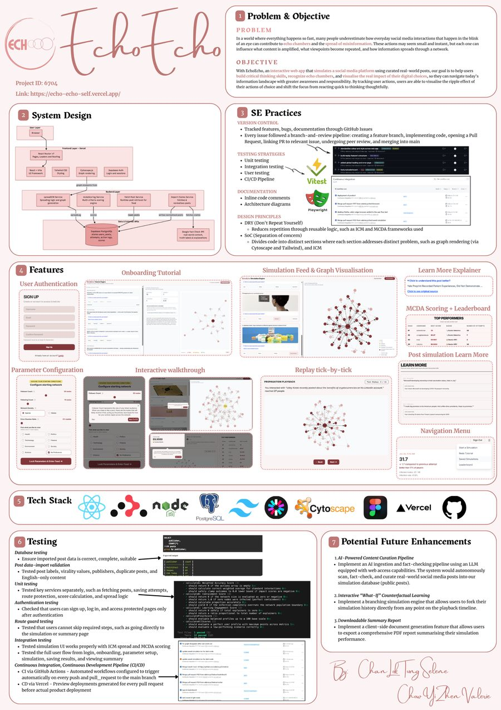

Chan Lok Tung,
Selene.
I study how signals move — through aviation traffic networks, misinformation feeds, financial markets, and recommender systems — and build the software that helps people see it clearly.
I understand AI models, I build products, and I assess whether they have commercial value.
AI undergraduate at NUS (Year 2, Class of 2029), currently completing an International Honors Program at Stanford. My work sits between research and engineering: I've analyzed AI markets for venture firms, benchmarked frontier models, and shipped full-stack products — from a platform simulating how misinformation spreads online, to an autonomous ML research agent, to a clinical decision-support tool for women's hormonal health.
I care about human-centered technology — systems that don't just work, but make it easier for people to reason about the world around them, whether that's an investor evaluating aviation AI, a clinician reviewing a model's output, or a student navigating an echo chamber.
Currently: NUS Orbital 2026, building EchoEcho, and vice-president of AIESEC NUS's outgoing global exchange committee.
Stanford University
International Honors Program. Design & Analysis of Algorithms, Modern Research Methods in Cognitive Science. Selected research proposal: a controlled machine-unlearning study measuring savings in LLM relearning.
National University of Singapore
Year 2, B.Sc. Artificial Intelligence. Coursework in algorithmic problem-solving, AI & ML foundations, data analysis, and scalable software development.
Hong Kong
Research Intern
Qiming Venture Partners- Mapped a $6.47B aviation AI market spanning air traffic control, digital twins, trajectory prediction, PBN, and traffic-flow forecasting.
- Identified high-growth sub-sectors through competitive, technical, and market analysis.
- Assessed AI certification and regulatory risks to produce actionable investment recommendations.
Hong Kong
Research Intern
Unicorn Partners- Benchmarked Gemini 2.5 Pro against OpenAI o3-mini and Claude 3.7 Sonnet on coding and mathematical reasoning.
- Compared 3 XR ecosystems and products — Android XR, Apple Vision Pro, and Meta Hypernova — to assess market opportunities.
- Produced 5 research briefs covering GenAI products, agentic AI, tourism disruption, search behavior, and consumer technology adoption.
EchoEcho
Social Network Simulation on Misinformation Spread

A full-stack simulator modeling echo chambers and engagement-driven misinformation spread. Implemented eight core features spanning authentication, scenarios, interactive feeds, graph visualization, replay, scoring, and leaderboards.
Built with Chow Yi Zhen Valerie.
Autonomous ML Research Agent
For Recommender Systems
An autonomous agent that runs its own ML research loop end to end. Automated 35 candidate evaluations across 11 iterations in 5.86 hours on one CPU with only one manual intervention. Engineered sealed-split gates and 500-resample paired bootstraps, recording zero test-set access and rejecting two non-generalizing gains.
AI Ensemble for Women's Hormonal Health
Clinical Decision Support for PCOS & Thyroid Conditions
Co-developed a 3-model ensemble for PCOS and thyroid decision support using cohorts totaling roughly 3,700 patient records. Built two-role Flask workflows for report upload, prediction summaries, shared records, and clinician review queues, with safety controls covering non-diagnostic chatbot responses, missing-data detection, and clinician escalation.
Talk to an AI that knows my background.
Trained on my résumé and projects — ask about my research, EchoEcho, or how I'd approach a problem. It's me, at 2am, answering your questions so I don't have to.